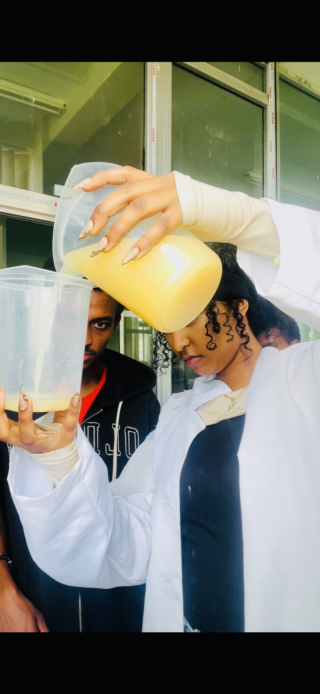
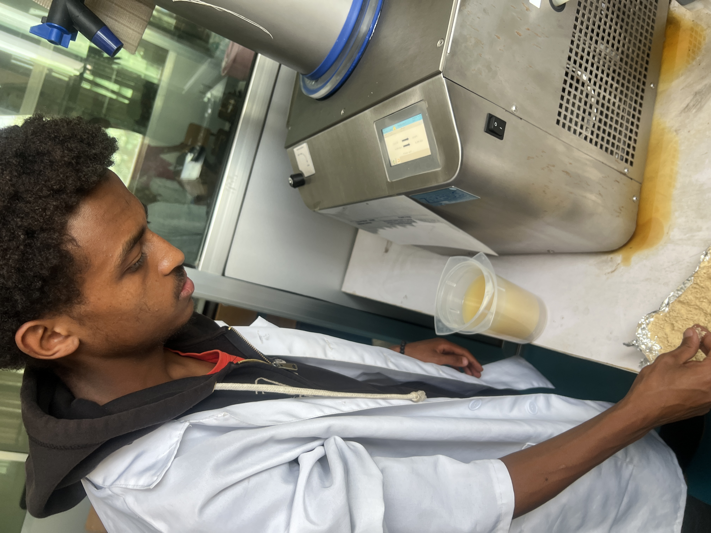
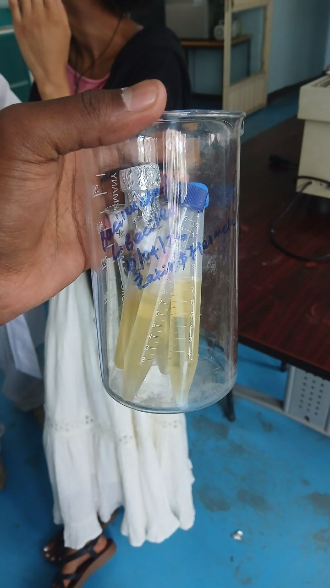
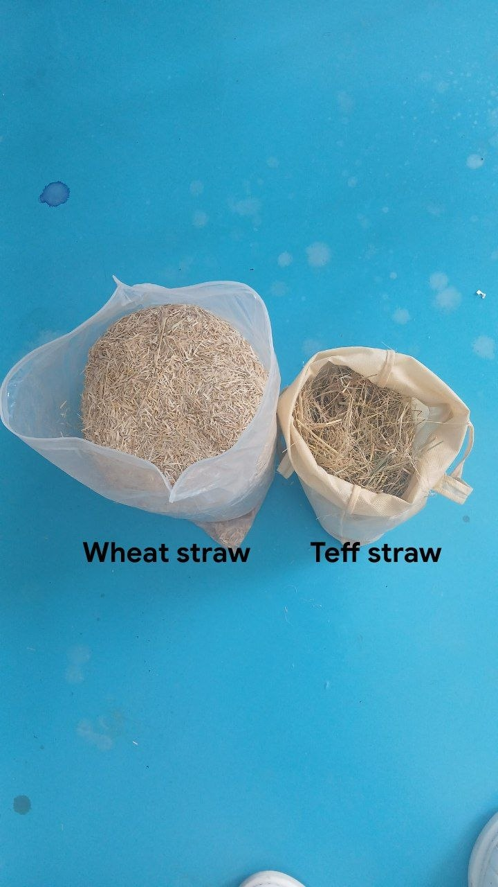
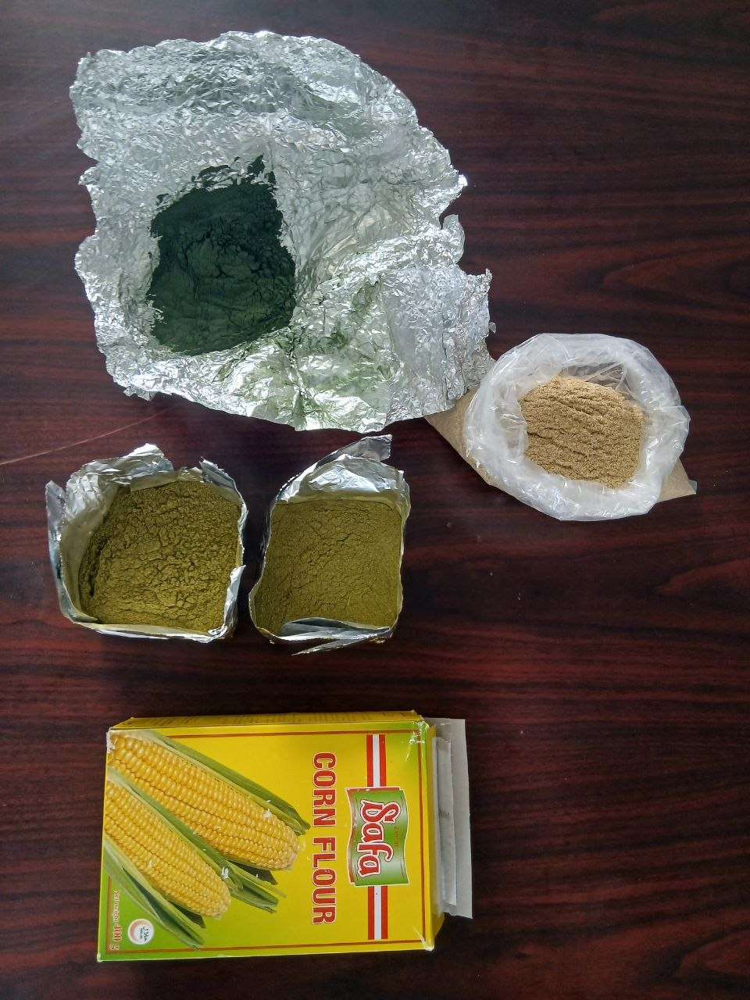
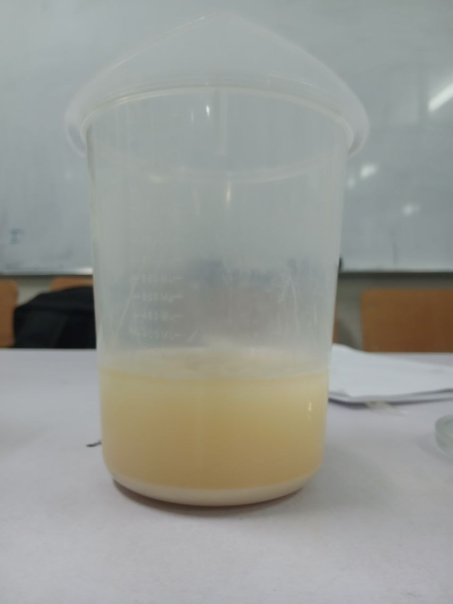
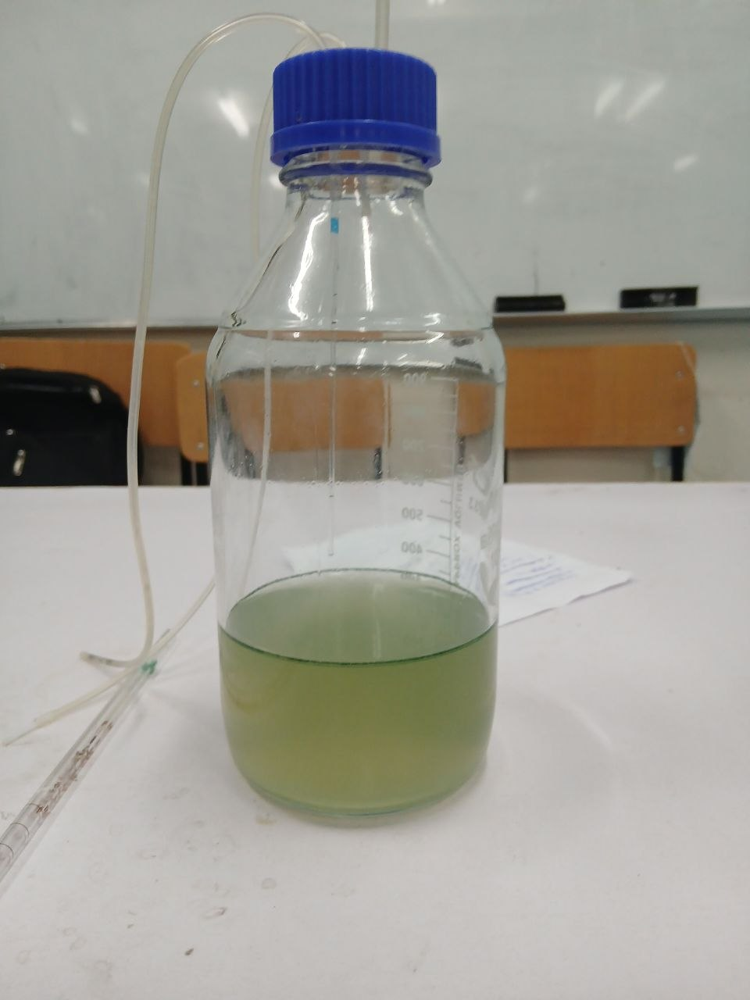
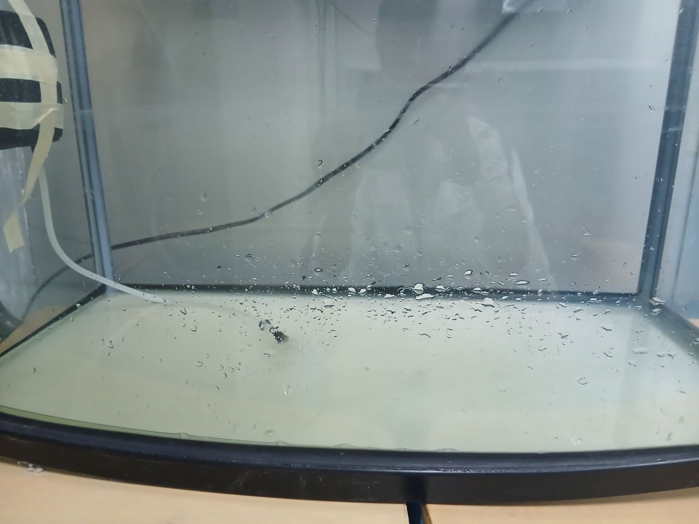

How We Produced our Feed
A behind-the-scenes look at our feed production process, step by step.

Selecting quality raw materials

Mixing balanced ingredients

Extrusion for digestibility

Drying the extruded feed

Packaging the feed

Storing finished product

Quality control & lab testing

ingredients

Mixing production batch